Refer to Figure 16.22 (f) for the HPN filter.
The transfer function of the high pass notch filter is,
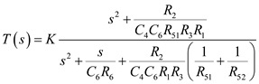
The high frequency gain is calculated at  . 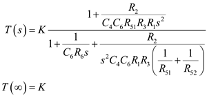
. 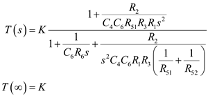
Thus the high frequency gain is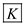.
Refer to Figure 16.22 (f) for the HPN filter.
The transfer function of the high pass notch filter is,
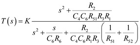
The high frequency gain is calculated at . 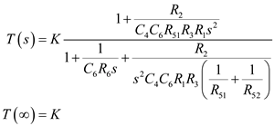
Thus the high frequency gain is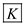.
The transfer function of the low pass notch filter is,
Compare the transfer function with .
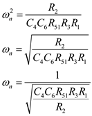
Thus, the notch frequency is, .
Thus, resonant frequency of the low pass notch filter is,
And
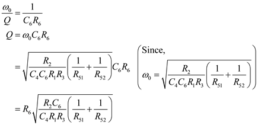
Thus, the quality factor of the low pass notch filter is, .
The ratio is,
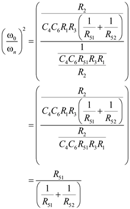
 …… (1)
…… (1)
Now the ratio is,
Thus, the design equation is,
.
From equation (1) we have
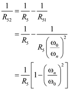
Thus, the design equation is,
.